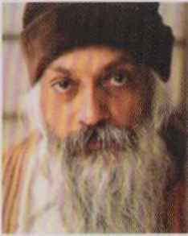

Yoga, hayale dalmayan bir zihne sahip olma yöntemidir. Yoga, burada ve şimdide olma bilimidir. Yoga, artık geleceğe yönelmemeye hazırsın anlamına gelir. Yoga, artık umut etmemeye ve varoluşunun bir adım önüne zıplamamaya hazırsın demektir. Yoga, gerçekle olduğu gibi yüzleşmek demektir.
Derin bir illüzyonda yaşıyoruz; umudun, geleceğin ve yarının illüzyonunda. İnsan, şu andaki haliyle kendini aldatmadan var olamaz. İnsan, şu andaki haliyle hakikate ulaşamaz. Bunun iyice anlaşılması gerekir, çünkü anlaşılmadığı takdirde, Yoga denilen araştırmaya giriş yapılması mümkün değildir.
Yaşadığımız an, daima bir cehennemdir. Bunu sadece geleceğe yönlendirdiğin umutların sayesinde sürdürebiliyorsun. Bugün, bir yarın olduğu için yaşayabiliyorsun. Yarın bir şeylerin olacağını umut ediyorsun; yarın cennetin bazı kapıları açılacak sanıyorsun. Bugün hiçbir zaman açılmayacak ve yarın geldiğinde yarın olarak değil, bugün olarak gelecektir, ama zihnin bu arada tekrar ilerlemiş olacaktır. İleriye doğru gitmeye devam ediyorsun; işte hayale dalmanın anlamı budur. Şu anda yanında bulunan, burada ve şimdi olan gerçekle bir değilsin, başka bir yerdesin; ileri doğru hareket ediyor, ileri doğru zıplıyorsun.
“Osho, 20. yüzyılın 1000 ilahından biri...”
The Sunday Times
“Hindistan’ın kaderini değiştiren (Gandhi ve Buda gibi) on kişiden biri...”
Sunday Mid Day
“Osho, İsa’dan bu yana yeryüzüne inmiş en tehlikeli insan...”
Tom Robbins